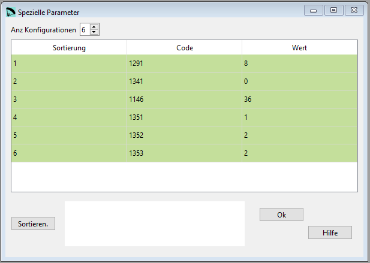

Spezielle Parameter¶
Dieser Abschnitt ist ein “Platzhalter”, um spezielle Parameter hinzuzufügen, die Dinge aus vorherigen oder zukünftigen Datenabschnitten steuern. Datenabschnitte… Es ist ein unorthodoxer und etwas “gefährlicher” Abschnitt, weil jeder Parameter oder Änderung von vorherigen oder zukünftigen Parametern hinzugefügt werden kann. (!).
Jede Zeile beginnt mit einem Kontrollcode, einer ganzen Zahl, die eine zu spezifizierende Bedeutung hat. Und dann, in derselben Zeile ein oder mehrere Parameter (ganze Zahlen, reelle Zahlen oder Zeichen), die mit dem Gegenstand des Kontrollcodes.
{kind=link}
Rohdaten:
*******************************************************
* 37. SOME SPECIAL PARAMETERS
*******************************************************
1
6
1291 8 nsegments in transverse direction (stl surfaces)
1341 0 use CAD colors for each line type according table 34
1146 36. gravity center in % of a typical section (default is 36%)
1351 1 Solve method (1 or 6)
1352 2 Use flat area (1) or projected area (2)
1353 2 Print normal (0) or advanced detailed output (1),(2)
Die in 2022-09-18 verfügbaren Codes sind:
Code 1146 Definition eines geschätzter Massenschwerpunkt in % eines typischen Abschnitts (0% Vorderkante, 100% Hinterkante). Wird nur zur Berechnung des geschätzten Massenschwerpunkts des Flügels verwendet. Der Standardwert ist 36%.
Code 1291 Anzahl der transversalen Segmente, die für die STL-Flächen zu verwenden sind (siehe Abschnitt 29)
Code 1341 Wenn auf den Code eine “1” folgt, werden die Linien entsprechend den Farben nach Typ gezeichnet die in Abschnitt 34 definiert sind. Wenn es sich um eine “0” handelt, werden die Farben gemäß den normalen Leinenfarben gezeichnet, in Übereinstimmung mit den Abschnitten 24 und 25. Wenn der Code 1341 nicht vorhanden ist, werden die Farben durch die Abschnitte 24 und 25 definiert.
Code 1351 Die Methode zur Lösung von Gleichgewichtsgleichungen einstellen. Derzeit sind sechs verschiedene Methoden möglich.
Methode 1: Der Auftrieb und der Widerstand werden mit einem Koeffizienten K multipliziert, um ihren Wert zu homogenisieren. Das System von vertikalen (I) und horizontalen (II) Gleichgewichtsgleichungen wird numerisch gelöst für die Unbekannten K und Gamma (Gleitwinkel) und für alle anderen Parameter, die Daten sind, numerisch gelöst. Ein kontinuierlicher Bereich von Gamma-Werten wird Wenn die K1-Werte in der vertikalen Gleichung mit dem K2-Wert in der horizontalen Gleichung übereinstimmen, gilt das System als gelöst. Durch Hinzufügen eines zusätzlichen Widerstandskoeffizienten zur Datendatei Cde=1,1 bis 1,4 sind die Ergebnisse recht realistisch. Mit diesem zusätzlichen Widerstandsbeiwert wird versucht, die Geometrie darzustellen zu repräsentieren, die in der aerodynamischen Berechnung nicht modelliert wurde (wahrscheinlich Wellen und Einlässe).
Methode 2: In den Bilanzgleichungen wird ein Extra-Widerstand des Flügels berücksichtigt: Die beiden zu lösenden Unbekannten sind gamma und Dragextra. Mit einer numerischen Methode, die dem vorherigen Fall ähnelt, untersuchen wir einen Bereich von gamma, bis die Dragextra-Werte in den beiden Gleichungen übereinstimmen. Bei einigen Anfangswerten von Lift und Luftwiderstand konvergiert das System nicht, eine Warnmeldung wird in der Ausgabedatei angezeigt, und dann sind allgemeine Anpassungen der Skalierung des Pilotengewichts oder der Flügelfläche erforderlich.
Methode 3: Kombination der beiden vorangegangenen, zunächst wird ein Koeffizient K vorläufig berechnet, um den Auftrieb und den Luftwiderstand zu homogenisieren, und dann wird das System der beiden Gleichungen (V,H) durch Gamma-Winkel und zusätzlichen Widerstand. Diese Methode liefert recht gute Ergebnisse.
Methode 4: Löst den Gleitwinkel Gamma direkt mit einem analytischen Ausdruck (horizontales Gleichgewicht). Verwenden Sie Code 1352 auf 2 gesetzt, wenn Methode 4 verwendet wird. Die Fluggeschwindigkeit ergibt sich aus der Auftriebsgleichung (wie bei den vorherigen Methoden).
Methode 5: Löst den Gleitwinkel-Gamma direkt mit Hilfe eines analytischen Ausdrucks (horizontales Gleichgewicht), wie in Methode 4. Dann wird die Fluggeschwindigkeit numerisch aus der vertikalen Gleichgewichtsgleichung gelöst. Dann werden erneut Gamma, Auftrieb, Widerstand und andere Werte berechnet.
Methode 6: Dies ist eine vollständig analytische Methode. Die Gleitwinkelberechnung gamma basiert auf der horizontalen Bilanzgleichung. Gamma wird aus Anfangswerten (und Ergebnissen von Zwischenberechnungen) Berechnungen) und ist unabhängig von der Fluggeschwindigkeit. Die Fluggeschwindigkeit wird ebenfalls analytisch aus der Gleichung für das vertikale Gleichgewicht. Nach der Berechnung der Fluggeschwindigkeit werden die Werte für Auftrieb und Widerstand erneut berechnet und in die Gleichung für das Momentengleichgewicht eingesetzt, um die ideale Trimmung zu erhalten. Auch andere Werte werden in einfacher Form abgeleitet. So wird das System auf sehr elegante Weise vollständig aufgelöst. Die Calage-Berechnung wird nur mit der Momentenbilanzgleichung (III) durchgeführt, sobald die Gamma (Gleit-) und Theta (Assiette)-Winkel bekannt sind, und ist für alle Methoden gleich.
Die Genauigkeit der Methoden und ihre Anwendbarkeit werden derzeit noch untersucht. Es wird empfohlen, nur nur Methode 1 oder Methode 6 zu verwenden. Die Ergebnisse sind praktisch identisch. Die Ergebnisse der Methoden 1 und 6 sind stimmen mit den experimentellen Ergebnissen überein, die mit Hegala- und Tuluaq-Gleitschirmen erzielt wurden. Der Parameter “cle” (zusätzlicher Auftriebskoeffizient) wird normalerweise auf 1,0 gesetzt. Der Parameter “cde” (zusätzlicher Luftwiderstandsbeiwert) hat eine Bedeutung für das Endergebnis. Er stellt den Widerstand dar, den das verwendete numerische Modell (XFLR5 oder CFD) nicht bestimmen konnte. Für praktische Zwecke ist es notwendig, “cde”-Werte zu verwenden, die auf früheren Gleitschirmkonstruktionen zu verwenden, oder einfach cde so lange anzupassen, bis die Gleitzahl den Erwartungen entspricht… Dies liefert einen Wert, der der Realität nahe kommt. Wenn der Code 1351 nicht angegeben wird, wird standardmäßig die Methode 1 verwendet. Die Methoden 2 bis 5 werden noch geprüft, bitte nicht verwenden
Code 1352 Setzen Sie 1, um die flache Fläche zu verwenden, oder 2, um die projizierte Fläche in der Berechnung von Auftrieb, Widerstand und Geschwindigkeit zu verwenden. Aufgrund der der internen Anpassungen hat dieser Aspekt fast keinen Einfluss auf die Ergebnisse. Standardmäßig ist der Wert 2 verwendet, wenn Sie Methode 4 in Code 1352 verwenden. Dies ist ein Code, den der normale Benutzer nicht angeben muss.
Code 1353 Setzen Sie den Wert 0, um den Standardbericht in Abschnitt 17 von lep-out.txt auszugeben, oder setzen Sie den Wert 1 oder 2 für detailliertere Ausgabe, die für Studien und Kalibrierungsmethoden verwendet wird. Die Voreinstellung ist 0. Der ausführlichste Modus ist 2.
Code 2003 Wenn dieser Code und der Winkel angegeben werden, ist dies die Assiette, die bei der Berechnung von chi und phi berücksichtigt wird, wobei die die programminterne Berechnung von Tetha übergangen wird.
Beispiel für einen Winkel von -1º:
2003 -1.0
Eine detaillierte Beschreibung in englisch findest Du auf der Laboratori d'envol website.